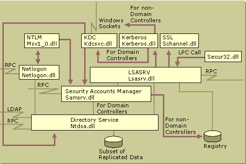

Windows 2000 includes a set of security components that make up the Windows security model. These components ensure that applications cannot gain access to resources without authentication and authorization. Components of the security subsystem run in the context of the Lsass.exe process, and include the following:
- Local Security Authority
- Net Logon service
- Security Accounts Manager service
- LSA Server service
- Secure Sockets Layer
- Kerberos v5 authentication protocol and NTLM authentication protocol
The security subsystem keeps track of the security policies and the accounts that are in effect on the computer system. In the case of a domain controller , which is a computer that has Active Directory installed, these policies and accounts are the ones that are in effect for the domain in which the domain controller is located. They are stored in Active Directory.
The Local Security Authority(LSA) is a protected subsystem that maintains the information about all aspects of local security on a system (collectively known as the local security policy and provides various services for translation between names and identifiers.
In general, the LSA performs the following functions:
- Manages local security policy.
- Provides interactive user authentication services.
- Generates tokens, which contain user and group information as well as information about the security privileges for that user. After the initial logon process is complete, all users are identified by their security identifier (SID) and the associated access tokens.
- Manages the Audit policy and settings. When an audit alert is generated by the Security Reference Monitor, the LSA is charged with writing that alert to the appropriate system log.
The local security policy identifies the following:
- The domains that are trusted to authenticate logon attempts.
- Who can have access to the system and in what way (for example, interactively, over the network, or as a service).
- Who is assigned privileges.
- What security auditing is to be performed.
- Default memory quotas (paged and nonpaged memory pool usage).
Figure 2.2 Active Directory Within the Local Security Authority (Lsass.exe) a local perspective of Active Directory within the LSA security subsystem (Lsass.exe). The LSA security subsystem provides services to both the kernel mode and the user mode for validating access to objects, checking user privileges, and generating audit messages.

The LSA has the following components:
Netlogon.dll . The Net Logon service. Net Logon maintains the computer's secure channel to a domain controller. It passes the user's credentials through a secure channel to the domain controller and returns the domain security identifiers and user rights for the user. In Windows 2000, the Net Logon service uses DNS to resolve names to the Internet Protocol (IP) addresses of domain controllers. Net Logon is the replication protocol for Microsoft® Windows NT® version 4.0 primary domain controllers and backup domain controllers.
Msv1_0.dll . The NTLM authentication protocol. This protocol authenticates clients that do not use Kerberos authentication.
Schannel.dll . The Secure Sockets Layer (SSL) authentication protocol. This protocol provides authentication over an encrypted channel instead of a less-secure clear channel.
Kerberos.dll . The Kerberos v5 authentication protocol.
Kdcsvc.dll . The Kerberos Key Distribution Center (KDC) service, which is responsible for granting ticket-granting tickets to clients.
Lsasrv.dll . The LSA server service, which enforces security policies.
Samsrv.dll . The Security Accounts Manager (SAM), which stores local security accounts, enforces locally stored policies, and supports APIs.
Ntdsa.dll . The directory service module, which supports the Windows 2000 replication protocol and Lightweight Directory Access Protocol (LDAP), and manages partitions of data.
Secur32.dll . The multiple authentication provider that holds all of the components together.
For more information about the LSA and its components, see "Authentication" in this book. For more information about access control, see "Access Control" in this book.
https://docs.microsoft.com/en-us/previous-versions/windows/it-pro/windows-2000-server/cc961760(v=technet.10)
.gif)